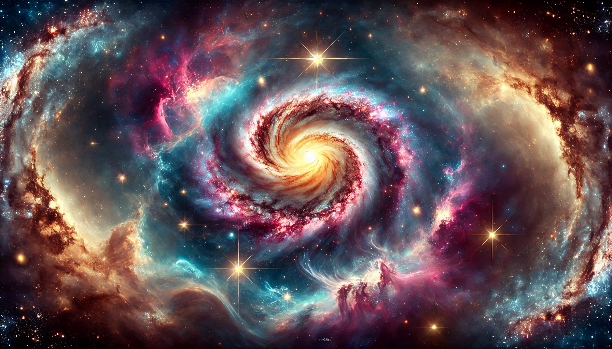

cosmos
목차
작가
칼 세이건
출판일
1980년
감상평에 대한 AI그림
광활한 우주의 아름다움을 느낄 수 있었으며 우주를 이해하는데 그치지 않고 인류의 존재에 대해서도 깊이 생각해볼 수 있었다.
인간은 별의 잔해로부터 만들어졌으며 결국 우주와 연결되어있는 존재임을 알게되었다.

감상평에 대한 AI 감정평가
✨ 우주의 아름다움, 인류 존재에 대한 성찰, 인간과 우주의 연결이라는 세 가지 핵심 주제를 짧고 명확하게 전달하였다
✨ 구체적으로 어떤 깨달음을 얻었는지, 왜 그렇게 느꼈는지 심화된 해석이 필요하다.
✨ 세이건의 과학적 설명이 철학적 사색으로 어떻게 이어졌는지 서술하면 감상이 더 깊어질 것이다.